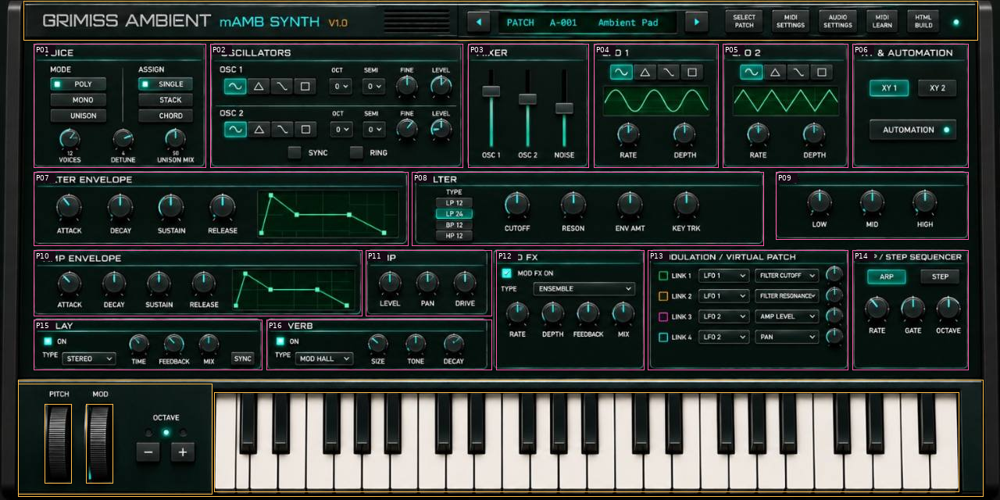
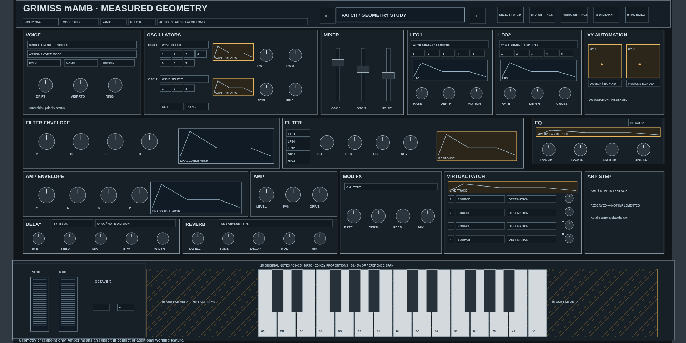
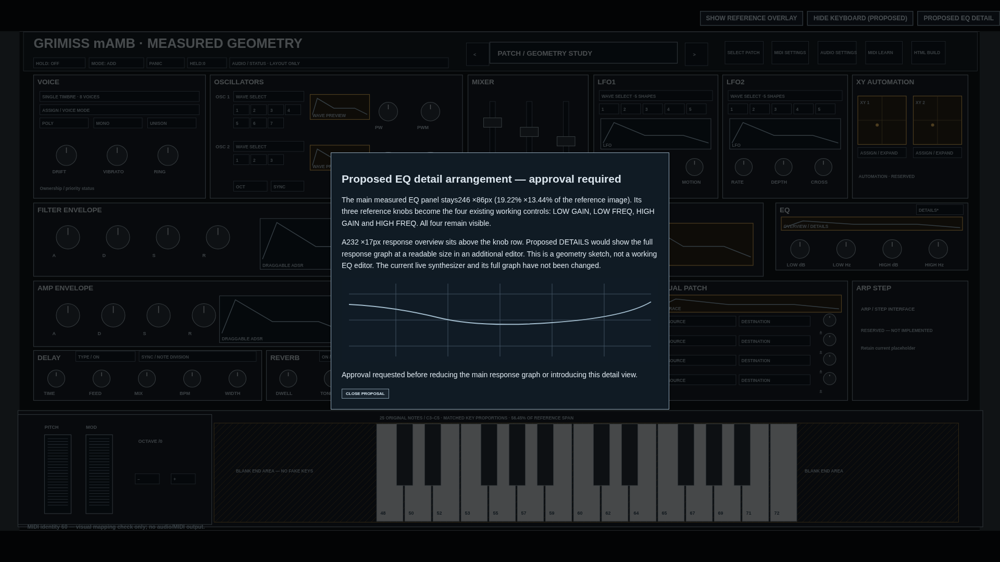
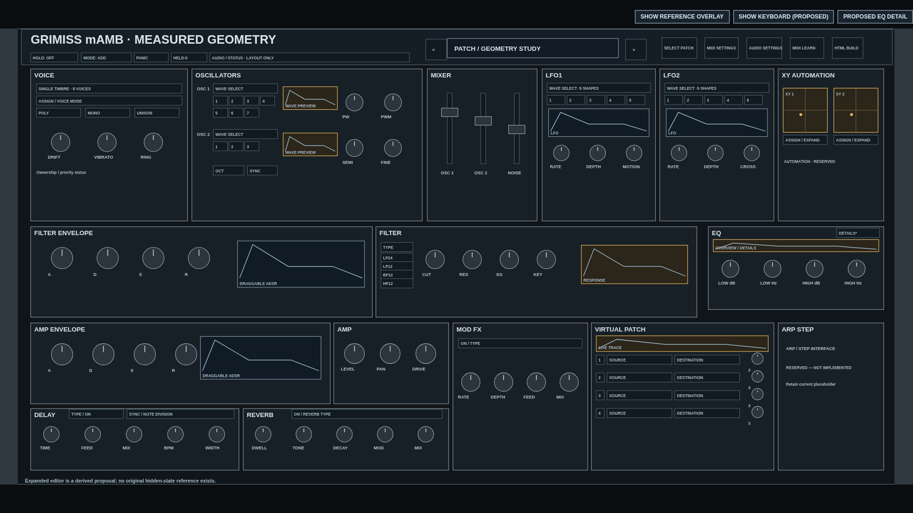

GRIMISS mAMB — measured geometry checkpoint
Geometry only. No further visual styling or full implementation has been performed. The working synthesizer, DSP, MIDI, parameter bindings, effects and patch management remain unchanged. This isolated measured-coordinate study requires approval before adoption.
1. What was measured
The original supplied JPEG is1280×640, an exact2:1image. Borders were picked against native pixels and checked in enlarged coordinate-labelled strips. Thin anti-aliased edge positions have approximately±2px uncertainty; this is image metrology, not an original CAD drawing. All percentages below use the full reference image width/height.
The current instrument's logical canvas is1920×1080(16:9), so it is12.5% taller at equal width. The proposed coordinate system is1280×640, with one uniform responsive scale. A1920×1080viewport contains a1920×960cabinet with60px top/bottom margins;1600×900contains a1600×800cabinet with50px margins. Cabinet proportions are not stretched to fill the viewport.

Zoomable complete component map(SVG) · Display/knob/fader measurements · Untouched original · Source SHA256, scanline runs, coordinates and uncertainty
Cabinet, header, keyboard, wheels, displays, knob groups and faders — full percentage table
The JSON/CSV additionally measures cabinet, header, control surface, keybed/controller bay, wheels, all reference display windows, knob groups and individual mixer slots/caps. The original has no EQ/filter response windows or exposed XY grids; those are proposals, not fabricated reference measurements.
2. Proposed panel layout — measured boundaries

All16major section boxes use the measured coordinates directly. Grey elements are schematic space reservations, not final control styling. Amber elements identify additional working features absent from the reference. This is not a claim that live controls have already been implemented or fitted.
4. Keyboard: unavoidable note-count conflict
The mockup has27visible white fronts and18black faces; the live keyboard has15whites and10blacks, MIDI48–72(C3–C5). The reference image is unlabelled and has irregular narrow fronts at the left edge; no pitch range is inferred from its artwork. The count is documented by scanline runs and an annotated image.
Measured median white face width34px, pitch36px and key length125px give a0.272width/length ratio. The current live white key is108.19×138.00px, ratio0.784—approximately2.88times too wide relative to its length. White-face width is2.656% of image width and length19.531% of image height; the black-face width is1.406% and its height12.344%, using the same respective image axes. Black frames are proposed at21×79px with18px faces, correct2+3chromatic positioning and no remapping.
Proposed exact-range solution: a538px-wide15-white-key bank centred inside the measured953px key-bed opening, with207.5px unused at either side. This keeps every original note and the measured key proportions, but uses only56.45% of the reference's continuous key span. The415px difference is not concealed with fake keys or additional notes. Approval is explicitly requested for these blank end areas. An alternative use for that space is additional displays, which would also require approval and a keyboard-collapse redocking plan.
Auditable white-front scan/count · Actual live-build measurements(read-only). The wheel slots and dedicated left-hand controller bay use their measured reference boxes. The diagram's note labels/clicks check original identities only; it emits no audio or MIDI.
5. Compact EQ, preserving four controls
The measured EQ is246×86px:19.219% of image width and13.438% of image height. The current EQ occupies33.739% of width and5.873% of cabinet area, versus2.583% reference area—about2.27times the reference area. The proposal restores its right-hand location and measured footprint.
All four existing controls—LOW GAIN,LOW FREQ,HIGH GAIN,HIGH FREQ—remain visible on one row. A232×17response overview sits above them. Proposed DETAILS would retain the full-size response graph in a separate editor; approval is required before changing the current main graph. The alternative is a permanently visible full graph in an unused keybed end area. The live EQ has not been changed.

7. Keyboard-hidden expansion — derived proposal

No original hidden-keyboard mockup exists. This diagram keeps the measured header fixed and redistributes the control-surface vertical extent fromy54–479to54–628. Section boxes expand; control symbols keep their aspect ratio. Allocation of the released space is a proposal, not a measured reference fact.
Checkpoint status
Browser checks pass:16section rectangles match the measured model, all25original note identities remain, the compact EQ proposal is accessible, hidden-mode geometry preserves the header/control aspect ratios, and both requested target viewports are captured. These are geometry/schema checks, not full-instrument DSP tests or visual acceptance. The live synthesizer was not modified. Verification report.
Approval requested before implementation: measured2:1panel layout; centred exact-range keyboard/blank end areas; compact EQ overview plus proposed detail view(or a specified persistent-graph alternative); mini XY pads with expansion and the listed compact allocations. No further styling or full rollout will proceed without approval.